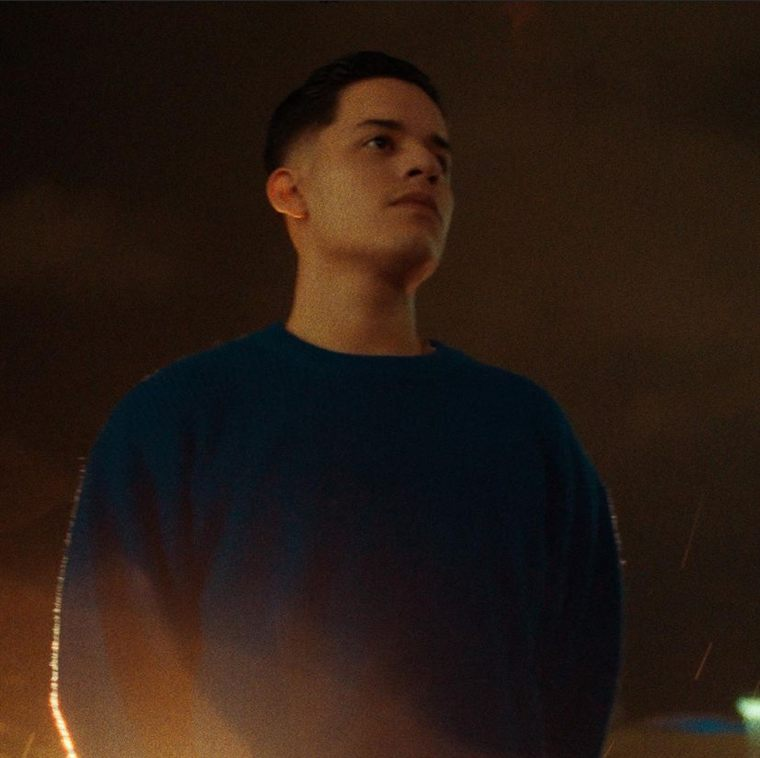
Quién es
Antes de las eras
Rodrigo Torres de la Garza nació en Monterrey el 27 de abril de 1998 y creció en Houston, Texas. Con la crisis de 2008 su familia regresó a Monterrey.
A los 13 años quiso entender cómo hacían sus canciones Skrillex, Swedish House Mafia y Avicii. Con una laptop vieja que le regaló un familiar aprendió a producir solo y empezó a subir pistas a SoundCloud y YouTube. Sus papás no estaban en contra de la música; les preocupaba que descuidara la escuela.
El nombre se lo sugirió en broma un amigo de Instagram. Antes usaba el usuario nsqkpapi, burlándose de los nombres estilo Drake y ASAP Mob. En 2018 armó No Pedí Permiso con sus mejores amigos: un colectivo sin mánager ni mentor donde aprendieron solos a sacar y mover su música.
Creo que tengo el talento para lograrlo; el hambre me sobra.» Nsqk a Metal Magazine
- 1998Nace en Monterrey, Nuevo León.
- 2008Regresa de Houston a Monterrey.
- 2011Empieza a producir, a los 13 años.
- 2015Entra a Internet Trash Collective, un grupo de músicos que se juntó en línea.
- 2018Funda el colectivo No Pedí Permiso.
- 2020Botánica, su primer EP.
- 2021Braille, EP en dupla con Méne.
- 2022ROY, su primer álbum.
- 2023ROY EN VIVO y Festival Ceremonia. Rolling Stone en Español lo llama «la guía hacia el futuro».
- 2024Lollapalooza Chile, ATP y el Alter Ego Tour.
- 2026mosca, su COLORS SHOW y su nombre en el cartel de Camp Flog Gnaw.
Era 1 de 4 · enero 2020
Botánica
- Formato
- EP
- Salida
- 31 ene 2020
- Sello
- No Pedí Permiso
- Canciones
- 5
- Duración
- 15:30
El jardín · una planta por canción · toca una estaca para escucharla
- 01Árbol De Manzanas
- 02309
- 03De Vez en Cuando (Aparece)
- 04Tonos de Azul
- 05¿Pa Qué La Hacemos De Pedo?
El debut. Cinco canciones que escribió, produjo y cantó él solo, sobre el amor, las relaciones a distancia y ser joven.
Salió el 31 de enero de 2020, unas semanas antes del encierro, bajo No Pedí Permiso. Suena cálido y limpio: pop, rap y R&B con restos de la electrónica con la que aprendió a producir. Sus referencias eran Tyler, The Creator, Mac Miller y Radiohead, y del rock tomó estructuras y alguna guitarra.
Para julio de 2020 ya pasaba del millón de reproducciones y lo puso en la conversación de la música mexicana. En esa época ya avisaba que lo siguiente iba a sonar más sucio y con más rock. Hoy dice que no se identifica del todo con Botánica, pero lo valora.
Tengo mucha hambre, y eso apenas comienza.» Nsqk, julio de 2020
Ficha de herbario · ejemplar n.º 1
- Ejemplar
- Botánica, EP
- Colecta
- 31 de enero de 2020
- Localidad
- Monterrey, Nuevo León
- Colector
- R. Torres de la Garza
- Contenido
- 5 canciones · 15:30
- Notas
- Escrito, producido y cantado por él solo
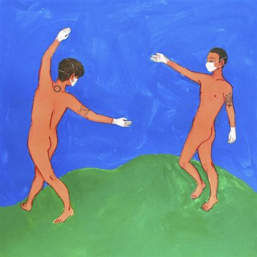
Lo que siguió · 2021Braille, un EP en dupla con Méne que los llevó a tocar en varias ciudades del país.
Las canciones
Era 2 de 4 · noviembre 2022
ROY
- Su nombreRodrigo
- Como le dicen en casaRoy
- El artistaNsqk
Con el tiempo vio a Roy como un alter ego más cerca de Rodrigo que de Nsqk.
- Formato
- Álbum
- Salida
- 23 nov 2022
- Sello
- Honey
- Canciones
- 12
- Duración
- 39:11
Su primer álbum largo y el más oscuro. Lo empezó al inicio de la pandemia y le tomó cerca de tres años.
Repetir el sonido de Botánica le parecía el camino fácil, así que sacó del disco las canciones que se podían etiquetar con facilidad. Casi todas se van armando hasta reventar en un clímax electrónico.
Algo un poco más visceral, un poco más polarizante, un poco más left field.» Nsqk a Sopitas, sobre ROY
Notas del disco
- Producción
- Nsqk, él solo
- Grabación
- Su casa y Worldwide Records
- Sonido
- Electrónica y R&B alternativo
- En la cabeza
- Porter Robinson, Madeon, Deb Never
- Empezó
- Al inicio de la pandemia
- Después
- ROY EN VIVO, 2023
Las letras hablan del miedo a crecer, de la depresión, de no ser quien te prometiste y de aprender a aceptarte. Él lo resume como un disco experimental sobre salud mental, y como una catarsis.
En vivo creció todavía más: en 2023 salió ROY EN VIVO, tocó en Festival Ceremonia y Rolling Stone en Español lo llamó «la guía hacia el futuro». También confesó que, al terminarlo, ya no se estaba divirtiendo haciendo música. Eso cambió lo que vino después.
La repisa · un objeto por canción · toca uno para escucharlo
Las canciones
Alrededor de ROY
El sencillo que lo abrió, el que tuvo segunda vida y el disco en vivo, donde algunas versiones le gustan más que las de estudio.
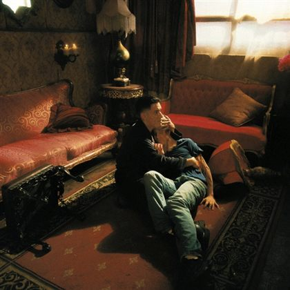
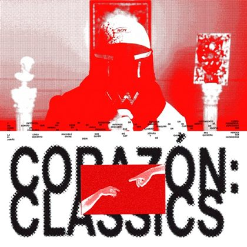
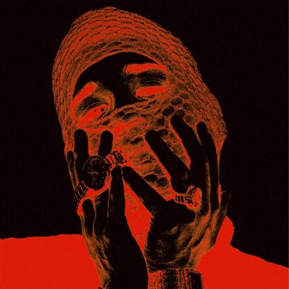
Era 3 de 4 · agosto 2024
ATP
Aún Te Pienso
- Formato
- Mixtape / álbum
- Salida
- 14 ago 2024
- Sello
- Honey · Worldwide
- Pistas
- 12 + 5 skits
- Duración
- 40:25
Aún Te Pienso. Iba a ser un mixtape y terminó siendo un disco armado como una estación de radio, de esas que escuchas en el coche.
Si ROY salió de pasarla mal, ATP salió de pasarla bien. Lo escribió viviendo en la Ciudad de México, lejos de su pareja y de su familia.
Son los dos extremos.» Nsqk a Rolling Stone en Español, sobre ROY y ATP
La estación se llama Radio ATP 30.9 y la conduce el streamer El Mariana. Las referencias fueron Dawn FM de The Weeknd, Flower Boy de Tyler, FM! de Vince Staples y las radios de GTA y Forza. La producción es más mínima que antes, con la voz y la letra al frente, aunque él se considera un productor maximalista.
Desde octubre de 2023 fue soltando sencillos que no entraron al disco, todos con la misma frase sampleada: «Do you think about me?». ATP es la respuesta.
Lo llevó al Alter Ego Tour, de Guadalajara a Hermosillo pasando por Monterrey, Los Ángeles, San Antonio y Tijuana, y cerró la era en diciembre de 2024 con UGH / OTROS LUGARES, la segunda junto a DrefQuila.
La hoja de calcomanías · una por pista · toca una para escucharla
La canción que da nombre al disco. Rap y R&B melancólico: desearle lo mejor a alguien que ya no está, y la presión de que la música ahora sea su trabajo de tiempo completo.
La programación
Mueve el dial o pica un número y el radio te cuenta de qué va cada pista. Los skits son la cabina de El Mariana. Enciende el radio para oír 30 segundos de cada pista.
Do you think about me?
Los sencillos que prepararon la pregunta, el disco que la respondió y el que cerró la era. Toca una portada para escucharla.
- oct 2023LOVELANGUAGESencillo · abrió la serie
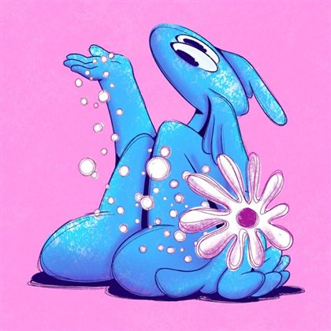
- dic 2023COMETIERRA REMIXRemix · con legallyrxx
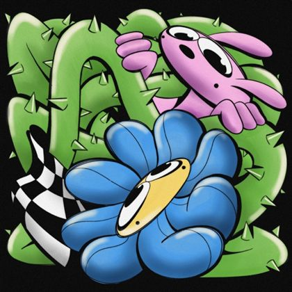
- ene 2024BAD INTENCIONESSencillo
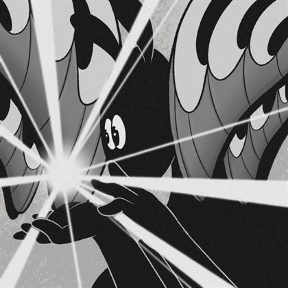
- feb 2024SIGO AL PENDIENTESencillo
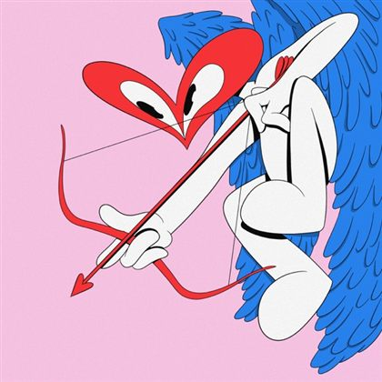
- abr 2024SÍSIFO / NADIE MÁS!Sencillo doble
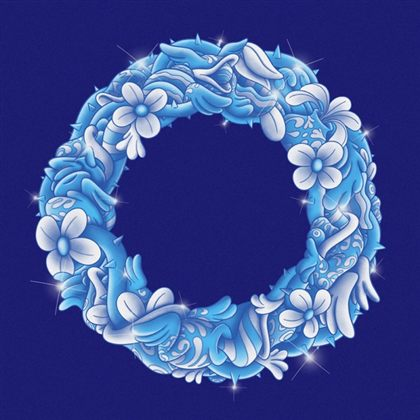
- jul 2024misaAdelanto del disco
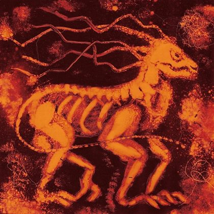
- ago 2024ATPEl disco · la respuesta
- dic 2024UGH / OTROS LUGARESCierre · con DrefQuila
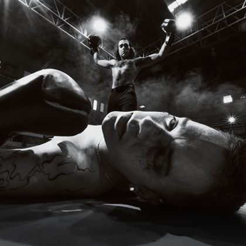
Era 4 de 4 · octubre 2026 · la actual
- Formato
- Álbum
- Salida
- 15 oct 2026
- Sello
- Honey · Worldwide
- Canciones
- 17
- Duración
- 1 h 01 min
Metamorfosis completa · cuatro etapas, cuatro discos
- HuevoBotánica · 2020
- LarvaROY · 2022
- PupaATP · 2024
- Moscamosca · 2026
Las moscas pasan por cuatro etapas antes de volar. Nsqk va en su cuarto disco.
Als Gregor Samsa eines Morgens aus unruhigen Träumen erwachte, fand er sich in seinem Bett zu einem ungeheueren Ungeziefer verwandelt.
Una mañana, al despertar de sueños intranquilos, Gregor Samsa se encontró en su cama convertido en un insecto monstruoso.
El disco de la metamorfosis. Diecisiete canciones, una hora y un giro al rock con guitarras distorsionadas.
Después de ATP su departamento se llenó de moscas. Él lo achacó a una brujería; tras una limpia se fueron, pero igual se mudó. En esos meses dos personas distintas le regalaron La metamorfosis de Kafka, y se obsesionó.
De ahí salió la pregunta que amarra el disco: ¿en qué se convierte alguien que persigue la grandeza? Comparó la fama con lo que le pasa a Gregor Samsa, el vendedor que un día despierta convertido en insecto.
Le tomó dos años y medio. A diferencia de ROY y ATP, que hizo casi solo, esta vez trabajó con un equipo de productores y compositores (Urbøi, Deputy, Luis Gómez, Marquitos y Alizzz), y la mezcla es de Stephen Sedgwick, que ha trabajado con Gorillaz y Blur. Las referencias fueron Radiohead, sobre todo In Rainbows, además de Atoms for Peace, Blink-182, Smashing Pumpkins y DATA de Tainy. El disco va de texturas abrasivas y oscuras a sonidos más vulnerables conforme avanza, y en medio caben un sierreño triste, techno y funk.
Lo fue enseñando con un videojuego para celular, transmisiones en Canal 600 y una lotería de «MOSCAS», y lo estrenó el 15 de octubre de 2026 con una escucha en la Macroplaza de Monterrey para más de 40 mil personas. Invitó a Nina, Jean Dawson, Riosse, Eslabon Armado, Julieta Venegas y Kevin Kaarl. Tras dos noches agotadas en el Palacio de los Deportes, lo presentará el 23 de enero de 2027 en el Estadio GNP Seguros, y ya aparece en el cartel de Camp Flog Gnaw, el festival de Tyler, The Creator, una de sus primeras influencias.
El lado más grotesco de perseguir la grandeza.» Rolling Stone en Español, sobre mosca
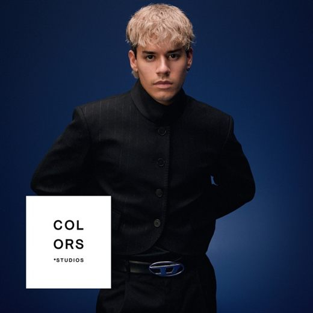
A COLORS SHOW · sep 2026Antes del disco presentó tuffluv en el formato de COLORS: un cuarto de un solo color y una toma en vivo.
La colección · un ejemplar por canción · toca uno para escucharlo